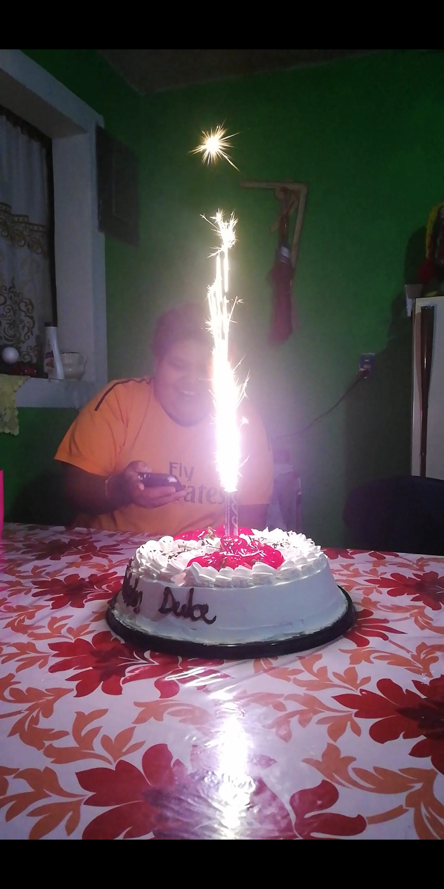

A todas las madres, no solo de México, sino, de todo el mundo, le deseo tener un excelente día de las madres, celebren con sus seres queridos y pásenselo de lo mejor, disfrutando con todos sus familiares.
Las madres, son aquellas que crían no solo a hijos y que dedican gran parte de toda su vida a elles, son también mujeres que aman a alguien tanto como a un hijo, sin que este sea su hijo, todos tenemos mucho que agradecerles a ellas, dedíquenle algo especial, aparten sus tiempos para dedicarle a sus madres esto.
El día de las madres no solo es celebrado en México, sino, también es muy común en países de toda América, por ejemplo, Estados Unidos celebra el 9 de mayo a diferencia de México que la celebra el día 10.
Todas las madres se merecen algo especial, no busquen regalar algo caro, busquen que lo que le regales sea de calidad, que venga de su corazón y que también su madre sepa que ustedes están agradecidos con ellas.
Aqui les dejo algunas canciones del dia de las madres para celebrar esta hermosa época del año.
Listado de canciones del dia de las madres